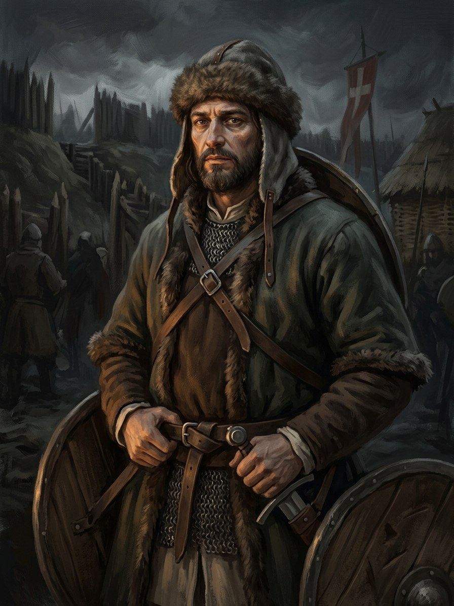

Tautvilas Kęstutaitis (Kondrat)¶
Summary¶
Tautvilas Kęstutaitis (baptised Kondrat, 21 Oct 1383), younger brother of Vytautas, fights on the Order’s side and is killed at the siege of Vilnius in 1390.
Tautvilas Kęstutaitis (Kondrat)

Tautvilas Kęstutaitis (Kondrat) · character¶
Tipas |
veikėjas |
Metai |
?–1390 |
Status |
Istoriniai duomenys |
Pastaba |
Kęstutis’s son; baptised Kondrat 21 Oct 1383; fought with the Order and was killed besieging the Crooked Castle, „believed by a crossbow bolt“ (Wigand). Birth year unknown. |
Appearance & tells¶
A man of the family’s face: Henry Bolingbroke, watching from the Order’s side, sees that the red-cloaked Karigaila under the burning gate has „the same cut of face“ as Tautvilas and Wigand (Vytautas), a family face (Book II ch. 7). Tautvilas fights on the Order’s side in a white cloak, as his brother does, and the saga’s one picture of him is at the gate of the Crooked Castle in September 1390: he reaches it first, speaks a few words to the red-cloaked Karigaila under the arch and falls on his knees, his white cloak darkening, with a crossbow bolt in him. The shooter is never named. He is remembered kindly: he twice held little Sofija on his knee and taught her a German song, of which she can no longer recall the words (Book II ch. 8).
Want · Need · Lie · Truth¶
Want (external) |
A place and an honour under the Order’s banner, as Kęstutis’s youngest surviving fighting son, and to take Vilnius for his brother or with him. |
Need (internal) |
To be reconciled with his own blood instead of fighting it from the opposite side of the wall. |
Lie they believe |
The Order’s baptism (Kondrat, 21 Oct 1383) and arms will give him back his family’s place. |
Truth they learn (or refuse) |
The gate is the same for both sides: Gediminid blood shed by Gediminids, three years after the Pact that forbade it was dead, brings no god’s punishment and no one’s justice. |
Arc by book¶
Book II, ch. 7 (Sep 1390). Dies at the gate of the Crooked Castle during the siege of Vilnius, „believed killed by a crossbow bolt“; Karigaila dies the same hour when the arch collapses. His death is the proof that, with the Pact dead, no god intervenes when Gediminids kill Gediminids.
Book II, ch. 8 (winter 1390-91). Ona’s letter tells Sofija on the road to Moscow that he is dead, killed at the Crooked Castle.
Elsewhere. In the record he is baptised Kondrat on 21 Oct 1383, the autumn Vytautas is baptised Wigand, and fights with the Order; the books show none of this.
Power & magic¶
Tier 0. He has no gift and no bargain. His death is the saga’s demonstration of what the death of the Pact means: a Gediminid dies by a Gediminid’s gate and no Force responds (Book II ch. 7, Master chronology).
Record vs saga¶
[Historical record]: Son of Kęstutis and Birutė (VLE, Tautvila 1). Killed besieging the Crooked Castle at Vilnius in September 1390, „believed killed by a crossbow bolt“ (Wigand / Marburgietis; en.wikipedia, Siege of Vilnius 1390). VLE’s „9-10 June“ is nonsensical: the siege ran 11 Sep - 7 Oct. Fought on the Order’s side, not as a hostage at Lyck.
[The saga’s invention]: The shooter is unknown in the book (Book II ch. 7 replaced the axe duel with a bolt at the gate); Sofija’s letter in ch. 8 reports it so.
Tarimas¶
TAUT-vi-las · IPA /ˈtɐʊtvʲɪɫɐs/ · English sound-alike „TOWT-vih-lahs“. Stress on the first syllable. His baptismal name Kondrat (Conrad) was given on 21 Oct 1383.
Appearances¶
Book II: ch. 7 (the siege), ch. 8 (Sofija’s letter) and the afterword.
He is mentioned nowhere else in the books; his appearances in the Order’s service during 1383-90 are off the page.
Ryšiai
Child of: Kęstutis
Sibling: Vytautas
Took part in: Siege of Vilnius (11 Sep - 7 Oct); Crooked Castle falls 16 Sep — On the Order’s side; killed by a crossbow bolt at the Crooked Castle.
Chronologija¶
Year |
Event |
Book |
|---|---|---|
1390-09-11 |
Siege of Vilnius (11 Sep - 7 Oct); Crooked Castle falls 16 Sep |
II · Auksinis Šešėlis |
Sąsajos¶
graph LR
ev_vilnius_siege_1390["Siege of Vilnius (11 Sep - 7 Oct); Crooked Castle falls 16 Sep"]
kestutis["Kęstutis"]
tautvilas["Tautvilas Kęstutaitis (Kondrat)"]
vytautas["Vytautas"]
tautvilas -->|Took part in| ev_vilnius_siege_1390
kestutis -->|Parent of| tautvilas
vytautas -->|Sibling| tautvilas
style tautvilas stroke-width:3px